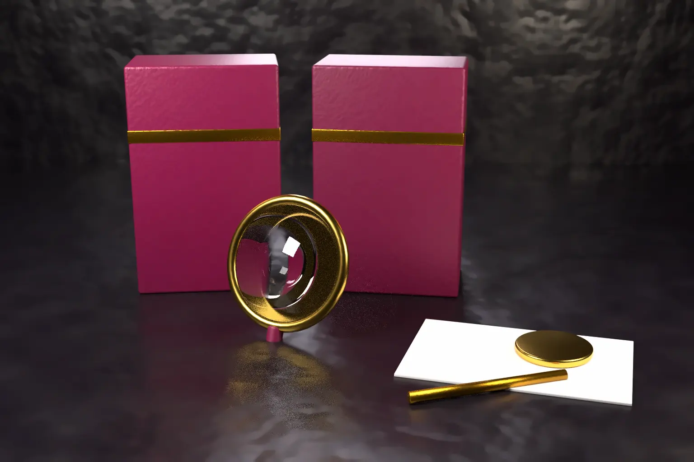

Can you use a registered trademark without permission? Sometimes you can. A registration does not give the owner a monopoly over every mention of a word. It lets the owner stop use in trade that confuses buyers or unfairly exploits the mark. Every major system also protects honest uses, such as describing your own goods, selling genuine goods and referring to the owner’s products.
The line was redrawn in Europe on 8 September 2026. In Inter IKEA Systems (C-298/23), the Court of Justice held that freedom of expression can be due cause for using a famous mark. It also held that simply invoking free speech is not enough. This explainer covers India, the United States, the EU and the UK. It also notes China’s new law.
- India, the EU and the UK use the same three tests. Identical mark on identical goods. Similar mark or goods with a likelihood of confusion. Use that takes unfair advantage of a mark with a reputation.
- The US asks mainly whether use in commerce is likely to cause confusion. Famous marks are also protected against dilution.
- Descriptive use, use to show what a spare part fits and resale of genuine goods are usually allowed. The use must stay honest.
- Parody and political speech get no automatic pass. In the EU, a court must weigh the user’s purpose against the harm to the owner. In the US, parody does not escape the confusion test when the mark is used as a brand.
- China’s revised Trademark Law takes effect on 1 January 2027.
What the owner of a registered trademark can stop
In India, section 29 of the Trade Marks Act, 1999 defines infringement. Under section 29(1), a person infringes by using an identical or deceptively similar mark in the course of trade. The use must be for the registered goods or services. Section 29(2) covers identical or similar marks and goods where the public is likely to be confused or to assume an association. Under section 29(3), confusion is presumed when both the marks and the goods are identical.
Section 29(4) protects a mark with a reputation in India against use on dissimilar goods. The use must be without due cause and must take unfair advantage of the mark or harm its distinctive character or repute. Our article on well known marks used in a different class explains how the Karnataka High Court applied that rule to ACC.
The Act is broad about what counts as use. Section 29(6) lists affixing the mark to goods or packaging and selling or stocking goods. It also lists importing, exporting and use on business papers or in advertising. Section 29(8) covers advertising that takes unfair advantage of the mark contrary to honest practices. Under section 29(9), spoken use of a word mark can infringe too.
Article 9(2) of the EU Trade Mark Regulation follows the same three tests. Article 9(3) lists the acts the owner can prohibit. They include affixing the sign, selling or stocking goods, importing or exporting, and use in advertising. Section 10 of the UK Trade Marks Act 1994 is in almost identical terms.
In the United States, 15 U.S.C. 1114(1) covers use of a registered mark in commerce without the owner’s consent. The use must be “likely to cause confusion, or to cause mistake, or to deceive.” Section 1125(c) separately protects famous marks against dilution by blurring or tarnishment. Under that section, confusion and competition need not be shown.
Trade names and company names
Using another’s mark as a business name is a common problem. In India, section 29(5) makes it infringement to use a registered mark as a trade name or part of one. The provision applies only where the business deals in the goods or services for which the mark is registered. Where the goods differ, owners usually also rely on section 29(4) and passing off.
The EU and UK lists are wider in form. Article 9(3)(d) of the EU Regulation treats use as a trade or company name as a form of use. Section 10(4)(ca) of the UK Act does the same. The ordinary tests of confusion or reputation still apply.
Uses that are usually allowed without permission
- Describing your own goods. Section 30(2)(a) of the Indian Act permits use that indicates the kind, quality, quantity or other characteristics of goods or services. Article 14(1)(b) of the EU Regulation is to the same effect.
- Saying what a part or accessory fits. Section 30(2)(d) allows use on accessories or spare parts where it is reasonably necessary to show compatibility. The use must not falsely suggest a trade connection. Article 14(1)(c) of the EU Regulation allows use needed to show the intended purpose of a product.
- Reselling genuine goods. Section 30(3) allows resale of goods lawfully acquired after the owner put them on the market. Section 30(2)(c) also protects goods connected in trade with the owner. In the EU, Article 15(1) exhausts the owner’s rights once the goods are put on the market in the European Economic Area with consent.
- Comparative advertising. India permits use under section 30(1) only if it follows honest practices and does not take unfair advantage or cause harm. In the EU, comparative advertising infringes when it breaks Directive 2006/114/EC. US dilution law excludes advertising that lets consumers compare goods or services.
Parody, criticism and political campaigns
The IKEA case concerned a Belgian political party’s 2022 “IKEA Plan” on asylum and immigration. Its illustrations used signs resembling the IKEA marks and figures like those in IKEA assembly instructions. The association behind the campaign admitted using the marks without consent. It argued that political expression and parody gave it due cause under Article 9(2)(c).
The Court of Justice accepted that freedom of expression can in principle be due cause. It also held that “mere reliance on the right to freedom of expression is not sufficient.” The user must give specific reasons and show that they outweigh the owner’s rights. The national court weighs good faith, any contribution to public debate and the harm to the owner. On the facts, the Court saw a risk of significant harm to the reputation of the marks. The final decision rests with the Belgian court.
The US Supreme Court also refused a free speech shortcut in Jack Daniel’s Properties v VIP Products. It was decided on 8 June 2023. A dog toy copied the Jack Daniel’s bottle as a joke. It held that where a mark is used as a source identifier, no First Amendment threshold test applies. The ordinary confusion test applies, and parody can still count within it. The parody exclusion from dilution also does not apply where the parody is used as the seller’s own brand.
Section 30 of the Indian Act does not mention parody or criticism. A defence must fit within honest use under section 30(1). Otherwise it must show that there was no use in the course of trade. Brands and campaigners should not assume that a joke or a political message is a defence.
What if the mark is not registered?
In India, section 27(1) bars an infringement action for an unregistered mark. Section 27(2) preserves the action for passing off. The owner must then prove its own goodwill, a misrepresentation and damage.
The US protects unregistered marks under 15 U.S.C. 1125(a). It covers use likely to cause confusion as to affiliation, connection, origin, sponsorship or approval. An EU trade mark exists only through registration, so Article 9 rights depend on it.
China: a revised law from 2027
China’s legislature has adopted a revised Trademark Law with 87 articles in nine chapters. CNIPA states that it takes effect on 1 January 2027 and enhances the protection of exclusive trademark rights. Indian and foreign brand owners that sell into China should review their Chinese filings and watching arrangements before that date.
Practical steps
- Before using another brand in your product name, packaging or advertising, ask one question. Does it tell buyers where your goods come from? If it does, the confusion and reputation tests apply in full.
- Refer to another brand only as far as needed, for example “compatible with” followed by the plain word mark. Do not copy logos, colours or get up.
- Check comparative advertisements against the honest practices tests in each market where they will run.
- Search company names and trade names, not only marks. In India, section 29(5) catches trade names used for the registered goods.
- Owners should register in each key market. Passing off and unregistered rights are a fallback, not a strategy.
Our trademark search, clearance and enforcement team can review a proposed use of another brand, or advise when a competitor uses yours. For a related case on shared names, see our analysis of two businesses that both used Duo.
Frequently asked questions
Is it illegal to use a registered trademark without permission?
Not always. It infringes when used in the course of trade in a way that causes likely confusion or takes unfair advantage of a reputed mark. Honest descriptive use, resale of genuine goods and showing compatibility are generally allowed in India, the EU and the UK.
Can I use a brand name to say my product works with theirs?
Usually yes, if it is reasonably necessary and does not suggest a trade connection. Section 30(2)(d) of the Indian Act and Article 14(1)(c) of the EU Regulation cover this. Use the word only, not the owner’s logo.
Can a trademark be used in a parody or political campaign?
Only with care. In Inter IKEA Systems, the Court of Justice held that free speech can be due cause. The court must weigh it against the harm to the owner. In the US, parody used as your own brand still faces the confusion test.
Official source
- The Trade Marks Act, 1999 on India Code (sections 27 to 30)
- 15 U.S.C. 1114, infringement of a registered mark
- 15 U.S.C. 1125, false designation of origin and dilution
- Jack Daniel’s Properties, Inc. v VIP Products LLC, No. 22-148, US Supreme Court, 8 June 2023
- Regulation (EU) 2017/1001 on the European Union trade mark (Articles 9, 14 and 15)
- Court of Justice press release on Inter IKEA Systems, Case C-298/23, judgment of 8 September 2026
- UK Trade Marks Act 1994, section 10
- CNIPA notice on the revised Trademark Law, 26 June 2026